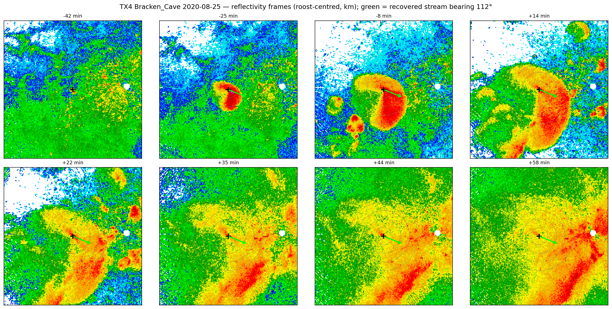

Research
I am a conservation ecologist who develops the methods, tools, and approaches needed to tackle pressing conservation challenges, especially in the systems and species that would otherwise go understudied.

Methods for studying biodiversity at scale
Acoustics, computer vision, radar, stable isotopes, and biodiversity informatics — methods to observe and infer life at scales traditional fieldwork can't reach.
View more →
Movement & ecology of understudied taxa
The cryptic migrations and natural history of birds, bats, and insects, and the conservation challenges they meet aloft.
View more →
Science-to-conservation
Turning quantitative findings into practical guidance for policy and management, from wind-energy curtailment to continental conservation syntheses.
View more →Methodological Approaches
I leverage a broad suite of methodological approaches to tackle pressing conservation challenges, with a particular focus on developing the methods needed to conduct research in under-studied systems and taxa.
Data Science
I develop methods to integrate biodiversity data from many sources and account for the biases in large, uneven datasets.
Learn more →Machine Learning & Quantitative Methods
From computer-vision detection to hierarchical and Bayesian models, I build the analytical tools that turn large, noisy ecological data into inference.
Learn more →Spatial Modeling
Understanding how organisms interact with, and are limited by, their environment is a central question of ecology.
Learn more →Remote Monitoring & Bioacoustics
I deploy passive acoustic monitoring, bioacoustic detection, and weather-surveillance radar to observe wildlife at scales that traditional field methods cannot reach.
Learn more →Stable Isotopes & Endogenous Markers
Analyzing endogenous markers like stable isotopes helps scale studies of animal movement from the individual to the population.
Learn more →Software Development
I develop open-source software to promote accessible, reproducible science.
Learn more →